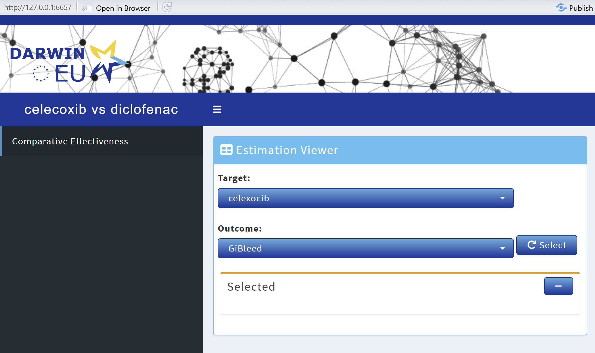

Compatibility
a04-compatibility.RmdCompatibility
DarwinShinyModules is compatible with other modules or
shiny code. One module that you might have noticed in the documentation
is the OhdsiModule. The OhdsiModule is a
module that wraps around the xViewer and
xServer functions. This enables you to easily integrate
already existing modules from OhdsiShinyModules into your
shiny apps built with DarwinShinyModules.
The base setup to do this would look something like this:
# Create connection details to the results database
connectionDetails <- DatabseConnector::createConnectionDetails(
dbms = "sqlite",
server = "./results.sqlite"
)
# Create a ConnectionHandler object
connectionHandler <- ResultModelManager::ConnectionHandler$new(
connectionDetails = connectionDetails
)
# Make our module
estimation <- OhdsiModule$new(
connectionHandler = connectionHandler,
viewerFun = estimationViewer,
serverFun = estimationServer,
resultDatabaseSettings = createDefaultResultDatabaseSettings()
)We can then either preview the module
DarwinShinyModules::preview(estimation)Launch a shiny app using the appStructure
appStructure <- list(
Estimation = estimation
)
DarwinShinyModules::launchDarwinDashboardApp(appStructure)Or integrate it in a bespoke shiny app
Example using CohortMethod
A full example using CohortMethod to run a comparative
effectiveness analysis of Celexocib vs Diclofenac, with outcome GiBleed
is shown below.
Run the analysis
library(DatabaseConnector)
library(Eunomia)
library(CohortMethod)
connectionDetails <- Eunomia::getEunomiaConnectionDetails()
Eunomia::createCohorts(
connectionDetails = connectionDetails,
cdmDatabaseSchema = "main",
cohortDatabaseSchema = "main",
cohortTable = "cohort"
)
covarSettings <- FeatureExtraction::createDefaultCovariateSettings(
excludedCovariateConceptIds = c(
# Celexocib
1118084,
# Diclofenac
1124300
),
addDescendantsToExclude = TRUE
)
tcos <- list(CohortMethod::createTargetComparatorOutcomes(
targetId = 1,
comparatorId = 2,
outcomes = list(CohortMethod::createOutcome(
outcomeId = 3,
outcomeOfInterest = TRUE,
trueEffectSize = NA
))
))
getDbCmDataArgs <- CohortMethod::createGetDbCohortMethodDataArgs(
studyStartDate = "",
studyEndDate = "",
covariateSettings = covarSettings
)
studyPopArgs <- CohortMethod::createCreateStudyPopulationArgs(
firstExposureOnly = FALSE,
restrictToCommonPeriod = FALSE,
removeDuplicateSubjects = "keep all",
removeSubjectsWithPriorOutcome = TRUE,
minDaysAtRisk = 1,
startAnchor = "cohort start",
riskWindowStart = 0,
endAnchor = "cohort end",
riskWindowEnd = 30
)
psArgs <- CohortMethod::createCreatePsArgs()
matchPsArgs <- CohortMethod::createMatchOnPsArgs(caliper = 0.2)
outcomeModelArgs <- CohortMethod::createFitOutcomeModelArgs(modelType = "cox")
analysis <- CohortMethod::createCmAnalysis(
analysisId = 1,
description = "Celecoxib vs Diclofenac",
getDbCohortMethodDataArgs = getDbCmDataArgs,
createStudyPopArgs = studyPopArgs,
createPsArgs = psArgs,
matchOnPsArgs = matchPsArgs,
computeCovariateBalanceArgs = CohortMethod::createComputeCovariateBalanceArgs(),
computeSharedCovariateBalanceArgs = CohortMethod::createComputeCovariateBalanceArgs(),
fitOutcomeModelArgs = outcomeModelArgs
)
outputFolder <- file.path(tempdir(), "cm-test-output")
refTable <- CohortMethod::runCmAnalyses(
connectionDetails = connectionDetails,
cdmDatabaseSchema = "main",
exposureDatabaseSchema = "main",
exposureTable = "cohort",
outcomeDatabaseSchema = "main",
outcomeTable = "cohort",
outputFolder = outputFolder,
cmAnalysisList = list(analysis),
targetComparatorOutcomesList = tcos
)Upload results to database
cg_cohort <- data.frame(
cohortId = c(1, 2, 3),
cohortName = c("celexocib", "diclofenac", "GiBleed"),
sql = "",
json = ""
)
resDb <- file.path(tempdir(), "cm-test-res.sqlite")
resConnectionDetails <- DatabaseConnector::createConnectionDetails(
dbms = "sqlite",
server = resDb
)
CohortMethod::uploadExportedResults(
connectionDetails = resConnectionDetails,
databaseSchema = "main",
append = FALSE,
exportFolder = exportFolder,
cohorts = cg_cohort
)Make a shiny module using DarwinShinyModules and
OhdsiShinyModules
library(DarwinShinyModules)
connectionHandler <- ResultModelManager::ConnectionHandler$new(connectionDetails = resConnectionDetails)
estimation <- DarwinShinyModules::OhdsiModule$new(
connectionHandler = connectionHandler,
viewerFun = OhdsiShinyModules::estimationViewer,
serverFun = OhdsiShinyModules::estimationServer
)
appStructure <- list(
Comparative_Effectiveness = estimation
)
# Default themed
DarwinShinyModules::launchShinydashboardApp(appStructure, title = "celecoxib vs diclofenac")
# DARWIN themed
DarwinShinyModules::launchDarwinDashboardApp(appStructure, title = "celecoxib vs diclofenac")